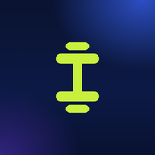

Apresentação
Abra esta página uma vez com internet. Depois tudo funciona sem internet, no celular ou no computador. Os alunos e números são de exemplo. Pode tocar em qualquer botão à vontade: nada vai para o app de verdade.
Funciona sem internetO site
PassosFit
Área do professorPainel, alunos, montar treino, evolução, pagamentos.
App do alunoO treino do dia com cargas, como a aluna Ana vê.
Outro alunoO app do Bruno, com cargas maiores e outra rotina.
Primeiro Passo
ApresentaçãoA página do Primeiro Passo no site.
App do alunoNíveis, caminho passo a passo, treinos e agenda.
Painel do professorAlunos, alertas do dia, agenda, mensagens e ganhos.
Painel da empresaVisão geral, clientes, financeiro e segurança.
Mexeu muito e quer os exemplos do começo de novo?